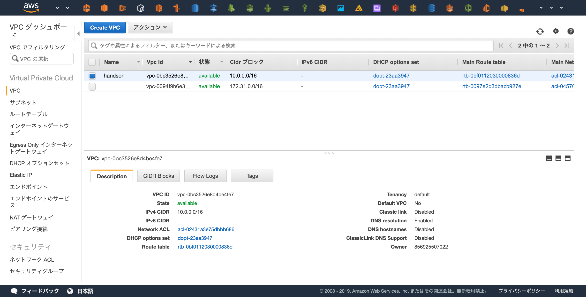
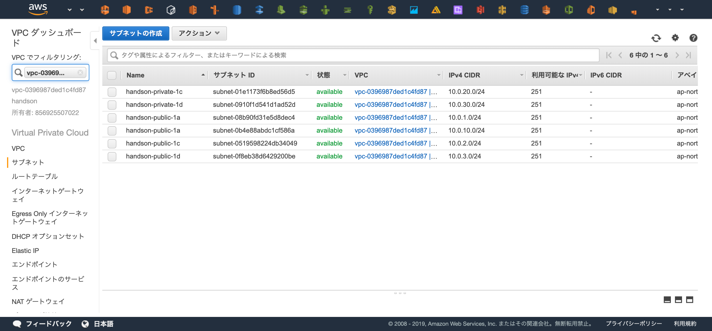

VPC
この章の目標¶

この章では上記の図の通りのVPCリソースを構築します。
3つのAvailability Zone で設計したときのネットワークが目標です。
Terraformで実際に記述していきましょう。
準備¶
新しいTerminalを立ち上げ、以下のコマンドでこの章用のディレクトリを作成し、作成したディレクトリに移動してください。
$ cd ~/Desktop/ $ mkdir terraform $ cd terraform
Terraformを立ち上げているTerminalにもディレクトリが作成されていることを確認し、共有されたディレクトリに移動してください。
# cd /terraform # ls handson vpc-handson # cd handson
プロバイダの定義を行います。今回もAWSを使用するので、"aws"と指定します。
以下のコードを main.tf の命名で handson/ 配下に作成してください。
provider "aws" { region = "ap-northeast-1" }
terraformの初期化を行います。
# terraform init Initializing provider plugins... - Checking for available provider plugins on https://releases.hashicorp.com... - Downloading plugin for provider "aws" (2.6.0)... The following providers do not have any version constraints in configuration, so the latest version was installed. To prevent automatic upgrades to new major versions that may contain breaking changes, it is recommended to add version = "..." constraints to the corresponding provider blocks in configuration, with the constraint strings suggested below. * provider.aws: version = "~> 2.6" Terraform has been successfully initialized! You may now begin working with Terraform. Try running "terraform plan" to see any changes that are required for your infrastructure. All Terraform commands should now work. If you ever set or change modules or backend configuration for Terraform, rerun this command to reinitialize your working directory. If you forget, other commands will detect it and remind you to do so if necessary.
VPC¶
 まずは今回使用するVPCの作成を行います。
まずは今回使用するVPCの作成を行います。
以下のコードを main.tf へ追記してください
# VPC # https://www.terraform.io/docs/providers/aws/r/vpc.html resource "aws_vpc" "main" { cidr_block = "10.0.0.0/16" tags = { Name = "handson" } }
コードの追記が追えたらplanを行ってから適用を行います。
# terraform plan terraform plan Refreshing Terraform state in-memory prior to plan... The refreshed state will be used to calculate this plan, but will not be persisted to local or remote state storage. ------------------------------------------------------------------------ An execution plan has been generated and is shown below. Resource actions are indicated with the following symbols: + create Terraform will perform the following actions: + aws_vpc.main id: <computed> arn: <computed> assign_generated_ipv6_cidr_block: "false" cidr_block: "10.0.0.0/16" default_network_acl_id: <computed> default_route_table_id: <computed> default_security_group_id: <computed> dhcp_options_id: <computed> enable_classiclink: <computed> enable_classiclink_dns_support: <computed> enable_dns_hostnames: <computed> enable_dns_support: "true" instance_tenancy: "default" ipv6_association_id: <computed> ipv6_cidr_block: <computed> main_route_table_id: <computed> owner_id: <computed> tags.%: "1" tags.Name: "handson" Plan: 1 to add, 0 to change, 0 to destroy. ------------------------------------------------------------------------ Note: You didn't specify an "-out" parameter to save this plan, so Terraform can't guarantee that exactly these actions will be performed if "terraform apply" is subsequently run.
# terraform apply :
実際にVPCが作成されたかの確認をしましょう。
 https://ap-northeast-1.console.aws.amazon.com/vpc/home?region=ap-northeast-1#vpcs:sort=desc:VpcId
Subnet¶
 次にサブネットを6つ作成します。
次にサブネットを6つ作成します。
Public SubnetとPrivate Subnetの2種類と、ap-northeast-1リージョン(東京リージョン)に存在する3つのAZへ各種リソース(EC2やECSやRDSなど)を配置したいため、2*3で計6つのサブネットを作成します。
まずは「"handson-public-1a"という命名でap-northeast-1aにCIDRが10.0.1.0/24のサブネット」を作成してみましょう
# Subnet # https://www.terraform.io/docs/providers/aws/r/subnet.html resource "aws_subnet" "public_1a" { # 先程作成したVPCを参照し、そのVPC内にSubnetを立てる vpc_id = "${aws_vpc.main.id}" # Subnetを作成するAZ availability_zone = "ap-northeast-1a" cidr_block = "10.0.1.0/24" tags = { Name = "handson-public-1a" } }
planを実行し、Subnetが作成されることを確認しましょう。
# terraform plan Refreshing Terraform state in-memory prior to plan... The refreshed state will be used to calculate this plan, but will not be persisted to local or remote state storage. aws_vpc.main: Refreshing state... (ID: vpc-0396987ded1c4fd87) ------------------------------------------------------------------------ An execution plan has been generated and is shown below. Resource actions are indicated with the following symbols: + create Terraform will perform the following actions: + aws_subnet.public_1a id: <computed> arn: <computed> assign_ipv6_address_on_creation: "false" availability_zone: "ap-northeast-1a" availability_zone_id: <computed> cidr_block: "10.0.1.0/24" ipv6_cidr_block: <computed> ipv6_cidr_block_association_id: <computed> map_public_ip_on_launch: "false" owner_id: <computed> tags.%: "1" tags.Name: "handson-public-1a" vpc_id: "vpc-0396987ded1c4fd87" Plan: 1 to add, 0 to change, 0 to destroy. ------------------------------------------------------------------------ Note: You didn't specify an "-out" parameter to save this plan, so Terraform can't guarantee that exactly these actions will be performed if "terraform apply" is subsequently run.
問題なければapplyを実行してSubnetの作成を行います。
# terraform apply :
以下のコードを追記して、残り5つのサブネットも作成します。
リソース名（e.g. "publi_1c", "public_1d"）と各種プロパティが少しずつことなるので注意してください。
resource "aws_subnet" "public_1c" { vpc_id = "${aws_vpc.main.id}" availability_zone = "ap-northeast-1c" cidr_block = "10.0.2.0/24" tags = { Name = "handson-public-1c" } } resource "aws_subnet" "public_1d" { vpc_id = "${aws_vpc.main.id}" availability_zone = "ap-northeast-1d" cidr_block = "10.0.3.0/24" tags = { Name = "handson-public-1d" } } # Private Subnets resource "aws_subnet" "private_1a" { vpc_id = "${aws_vpc.main.id}" availability_zone = "ap-northeast-1a" cidr_block = "10.0.10.0/24" tags = { Name = "handson-private-1a" } } resource "aws_subnet" "private_1c" { vpc_id = "${aws_vpc.main.id}" availability_zone = "ap-northeast-1c" cidr_block = "10.0.20.0/24" tags = { Name = "handson-private-1c" } } resource "aws_subnet" "private_1d" { vpc_id = "${aws_vpc.main.id}" availability_zone = "ap-northeast-1d" cidr_block = "10.0.30.0/24" tags = { Name = "handson-private-1d" } }
planを実行し、5つの新しいリソースが追加されることを確認しましょう。
# terraform plan : Plan: 5 to add, 0 to change, 0 to destroy.
問題なければapplyを実行してSubnetの作成を行います。
# terraform apply
WebコンソールからSubnetが6つ作成されていることを確認しましょう。
サイドバーのVPCでフィルタリングで先程Terraformから作成した "handson" というVPCを選択すると分かりやすいです。
 https://ap-northeast-1.console.aws.amazon.com/vpc/home?region=ap-northeast-1#subnets:sort=tag:Name
Internet Gateway¶
 VPCからインターネットへの出入り口となるInternet Gatewayを作成しましょう。
VPCからインターネットへの出入り口となるInternet Gatewayを作成しましょう。
コンソール上から作成するとInternet Gateway とVPCは自動で紐付きませんが、Terraformの場合プロパティでVPCを指定することで自動的に紐づけてくれます。
# Internet Gateway # https://www.terraform.io/docs/providers/aws/r/internet_gateway.html resource "aws_internet_gateway" "main" { vpc_id = "${aws_vpc.main.id}" tags = { Name = "handson" } }
planを実行し、1つのリソースが追加されていることを確認します。
# terraform plan Plan: 1 to add, 0 to change, 0 to destroy.
問題なければapplyを実行します。
# terraform apply
NAT Gateway¶
 プライベートサブネットからインターネットへ通信するためにNAT Gatewayを使用します。
プライベートサブネットからインターネットへ通信するためにNAT Gatewayを使用します。
NAT Gatewayは1つのElastic IPが必要なのでその割り当てと、AZ毎に必要なので3つ作成します。
まずはap-northeast-1a用のNAT Gatewayを1つ作成してみましょう
# Elasti IP # https://www.terraform.io/docs/providers/aws/r/eip.html resource "aws_eip" "nat_1a" { vpc = true tags = { Name = "handson-natgw-1a" } } # NAT Gateway # https://www.terraform.io/docs/providers/aws/r/nat_gateway.html resource "aws_nat_gateway" "nat_1a" { subnet_id = "${aws_subnet.public_1a.id}" # NAT Gatewayを配置するSubnetを指定 allocation_id = "${aws_eip.nat_1a.id}" # 紐付けるElasti IP tags = { Name = "handson-1a" } }
planで変更確認を行います。
# terraform plan Refreshing Terraform state in-memory prior to plan... The refreshed state will be used to calculate this plan, but will not be persisted to local or remote state storage. aws_vpc.main: Refreshing state... (ID: vpc-0396987ded1c4fd87) aws_subnet.public_1d: Refreshing state... (ID: subnet-0f8eb38d6429200be) aws_internet_gateway.main: Refreshing state... (ID: igw-0e46a72941683c00f) aws_subnet.private_1a: Refreshing state... (ID: subnet-0b4e88abdc1cf586a) aws_subnet.private_1d: Refreshing state... (ID: subnet-0910f1d541d1ad52d) aws_subnet.private_1c: Refreshing state... (ID: subnet-01e1173f6b8ed56d5) aws_subnet.public_1c: Refreshing state... (ID: subnet-0519598224db34049) aws_subnet.public_1a: Refreshing state... (ID: subnet-08b90fd31e5d8dec4) ------------------------------------------------------------------------ An execution plan has been generated and is shown below. Resource actions are indicated with the following symbols: + create Terraform will perform the following actions: + aws_eip.nat_1a id: <computed> allocation_id: <computed> association_id: <computed> domain: <computed> instance: <computed> network_interface: <computed> private_dns: <computed> private_ip: <computed> public_dns: <computed> public_ip: <computed> public_ipv4_pool: <computed> tags.%: "1" tags.Name: "handson-natgw-1a" vpc: "true" + aws_nat_gateway.nat_1a id: <computed> allocation_id: "${aws_eip.nat_1a.id}" network_interface_id: <computed> private_ip: <computed> public_ip: <computed> subnet_id: "subnet-08b90fd31e5d8dec4" Plan: 2 to add, 0 to change, 0 to destroy. ------------------------------------------------------------------------ Note: You didn't specify an "-out" parameter to save this plan, so Terraform can't guarantee that exactly these actions will be performed if "terraform apply" is subsequently run.
Elastic IP とNAT Gateway の2つが作成されることが確認できました。
applyを実行します。
# terraform apply
残り2つのNAT Gatewayも作成して適用しましょう
resource "aws_eip" "nat_1c" { vpc = true tags = { Name = "handson-natgw-1c" } } resource "aws_nat_gateway" "nat_1c" { subnet_id = "${aws_subnet.public_1c.id}" allocation_id = "${aws_eip.nat_1c.id}" tags = { Name = "handson-1c" } } resource "aws_eip" "nat_1d" { vpc = true tags = { Name = "handson-natgw-1d" } } resource "aws_nat_gateway" "nat_1d" { subnet_id = "${aws_subnet.public_1d.id}" allocation_id = "${aws_eip.nat_1d.id}" tags = { Name = "handson-1d" } }
# terraform plan : Plan: 6 to add, 0 to change, 0 to destroy. : # terraform apply :
Route Table¶
最後に、トラフィックを疎通させるための経路設定を行います。
Internet Gatewayを使用してインターネットへ疎通するためのRoute Table/Routes と NAT Gatewayを経由してインターネットへ疎通するためのRoute Table/Routes を設定します。
Subnetの呼び分け
Internet Gatewayと直接的な経路が存在するSubnetを"Public Subnet"と呼び、
インターネットへの経路が存在しない・NAT Gatewayを使用してインターネットへ接続しているSubnetを"Private Subnet" と呼びます

まずはInternet GatewayとSubnetの経路を作成しましょう。
少し多いので解説すると、作成するのは以下の3種類のリソースです。
- "aws_route_table"
- 経路情報の格納
- "aws_route"
- Route Tableへ経路情報を追加
- インターネット(0.0.0.0/0)へ接続する際はInternet Gatewayを使用するように設定する
- "aws_route_table_association"
- Route TableとSubnetの紐づけ
# Route Table # https://www.terraform.io/docs/providers/aws/r/route_table.html resource "aws_route_table" "public" { vpc_id = "${aws_vpc.main.id}" tags = { Name = "handson-public" } } # Route # https://www.terraform.io/docs/providers/aws/r/route.html resource "aws_route" "public" { destination_cidr_block = "0.0.0.0/0" route_table_id = "${aws_route_table.public.id}" gateway_id = "${aws_internet_gateway.main.id}" } # Association # https://www.terraform.io/docs/providers/aws/r/route_table_association.html resource "aws_route_table_association" "public_1a" { subnet_id = "${aws_subnet.public_1a.id}" route_table_id = "${aws_route_table.public.id}" } resource "aws_route_table_association" "public_1c" { subnet_id = "${aws_subnet.public_1c.id}" route_table_id = "${aws_route_table.public.id}" } resource "aws_route_table_association" "public_1d" { subnet_id = "${aws_subnet.public_1d.id}" route_table_id = "${aws_route_table.public.id}" }
# terraform plan : Plan: 5 to add, 0 to change, 0 to destroy. : # terraform apply :

NAT GatewayとSubnetの経路を作成しましょう。
Internet Gateway との違いとしては各AZにNAT Gateway が必要になる点です。
# Route Table (Private) # https://www.terraform.io/docs/providers/aws/r/route_table.html resource "aws_route_table" "private_1a" { vpc_id = "${aws_vpc.main.id}" tags = { Name = "handson-private-1a" } } resource "aws_route_table" "private_1c" { vpc_id = "${aws_vpc.main.id}" tags = { Name = "handson-private-1c" } } resource "aws_route_table" "private_1d" { vpc_id = "${aws_vpc.main.id}" tags = { Name = "handson-private-1d" } } # Route (Private) # https://www.terraform.io/docs/providers/aws/r/route.html resource "aws_route" "private_1a" { destination_cidr_block = "0.0.0.0/0" route_table_id = "${aws_route_table.private_1a.id}" nat_gateway_id = "${aws_nat_gateway.nat_1a.id}" } resource "aws_route" "private_1c" { destination_cidr_block = "0.0.0.0/0" route_table_id = "${aws_route_table.private_1c.id}" nat_gateway_id = "${aws_nat_gateway.nat_1c.id}" } resource "aws_route" "private_1d" { destination_cidr_block = "0.0.0.0/0" route_table_id = "${aws_route_table.private_1d.id}" nat_gateway_id = "${aws_nat_gateway.nat_1d.id}" } # Association (Private) # https://www.terraform.io/docs/providers/aws/r/route_table_association.html resource "aws_route_table_association" "private_1a" { subnet_id = "${aws_subnet.private_1a.id}" route_table_id = "${aws_route_table.private_1a.id}" } resource "aws_route_table_association" "private_1c" { subnet_id = "${aws_subnet.private_1c.id}" route_table_id = "${aws_route_table.private_1c.id}" } resource "aws_route_table_association" "private_1d" { subnet_id = "${aws_subnet.private_1d.id}" route_table_id = "${aws_route_table.private_1d.id}" }
# terraform plan : Plan: 9 to add, 0 to change, 0 to destroy. : # terraform apply :
経路設定が行えているかWebコンソール上から確認してみましょう。
確認ポイント
- "handson-" という名前からはじまるRoute Tableが4つあるか
- "handson-public" に3つSubnetが登録されているか
- "handson-public" に登録されているSubnetはPublic Subnetの命名になっているか
- "handson-public" の0.0.0.0への経路はInternet Gatewayを使用しているか
- "handson-private-*" は3つ存在し、それぞれ1つずつSubnetを持っているか
- "handson-private-*" は0.0.0.0への経路はNAT Gatewayを使用しているか

ここまでで基礎となるネットワークリソースの作成は完了です！